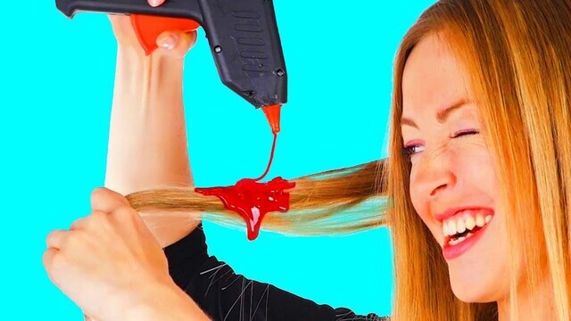

Popular Art videos that are aimed towards childern are they really safe for kids? "NO" they are not!!!
Summary of Crimes
Guilable People who watches it
Convections: N/A
None, they infact has grown as a channel and continue to do dangerous things while still being geared towards childern.